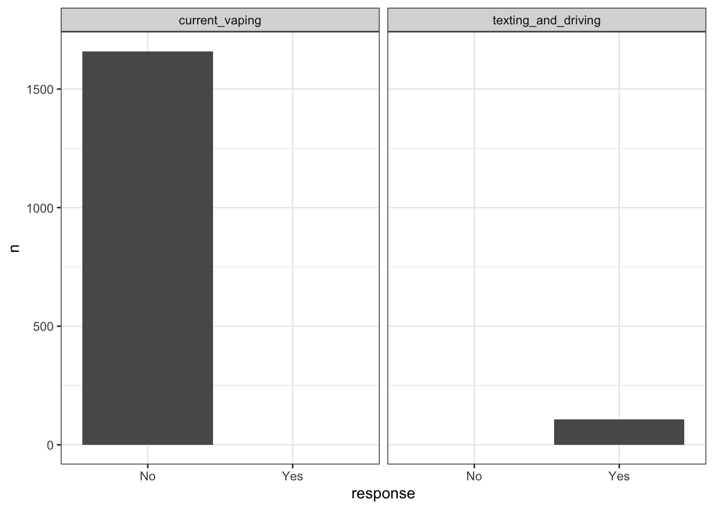

This section collaped the survey data into stat
load("./data/nyc_data.RData")
head(df_total,100)## # A tibble: 100 x 110
## id borough year age sex grade race4 race7 stheight stweight
## <int> <fct> <dbl> <fct> <fct> <fct> <fct> <fct> <dbl> <dbl>
## 1 1 Bronx 2003 16 y… <NA> 9th … Hisp… Hisp… NA NA
## 2 2 Bronx 2003 16 y… <NA> 10th… Blac… Blac… NA NA
## 3 3 Bronx 2003 16 y… <NA> 11th… <NA> <NA> NA NA
## 4 4 Bronx 2003 18 y… <NA> 12th… Hisp… Hisp… NA NA
## 5 5 Bronx 2003 <NA> male 11th… Blac… Blac… NA NA
## 6 6 Bronx 2003 14 y… male 9th … Hisp… Hisp… 1.75 102.
## 7 7 Bronx 2003 14 y… male 9th … Hisp… Hisp… 1.6 48.5
## 8 8 Bronx 2003 14 y… male 9th … All … Asian 1.6 49.9
## 9 9 Bronx 2003 14 y… male 9th … Blac… Blac… 1.78 56.7
## 10 10 Bronx 2003 14 y… male 9th … Hisp… Hisp… 1.65 56.7
## # … with 90 more rows, and 100 more variables: bmi <dbl>, bmipct <dbl>,
## # sexual_identity <fct>, sexual_contact <fct>, sexual_identity_2 <fct>,
## # sexual_contact_2 <fct>, seatbelt_use <fct>,
## # riding_with_drinking_driver <fct>, drinking_and_driving <fct>,
## # texting_and_driving <fct>, carring_weapon <fct>,
## # carring_weapon_school <fct>, gun_carrying_past_12_month <fct>,
## # safety_concerns_at_school <fct>, threatened_at_school <fct>,
## # physical_fighting <fct>, physical_fighting_at_school <fct>,
## # forced_sexual_intercourse <fct>, sexual_dating_violence <fct>,
## # physical_dating_violence <fct>, bullying_at_school <fct>,
## # bullying_electronically <fct>, sad_hopeless <fct>,
## # considered_suicide <fct>, made_suicide_plan <fct>,
## # attempted_suicide <fct>, injurious_suicide_attempt <fct>,
## # ever_cigarette_use <fct>, current_cigarette_use <fct>,
## # smoked_greater_10 <chr>, current_vaping <fct>,
## # current_smokeless_tobacco_use <fct>, current_cigar_use <fct>,
## # ever_alcohol_use <fct>, initiation_alcohol_use <fct>,
## # current_alcohol_use <fct>, source_alcohol <fct>,
## # currret_binge_drinking <fct>, largest_n_drinks <fct>,
## # ever_marijuana_use <fct>, initiation_marijuana_use <fct>,
## # current_marijuana_use <fct>, ever_cocaine_use <fct>,
## # ever_inhalant_use <fct>, ever_heroin_use <fct>,
## # ever_methamphetamine_use <fct>, ever_ecstasy_use <fct>,
## # ever_synthetic_marijuana_use <fct>, ever_steroid_use <fct>,
## # illegal_injected_drug_use <fct>, illegal_drugs_at_school <fct>,
## # ever_sexual_intercourse <fct>, sex_before_13 <fct>,
## # multiple_sex_partner <fct>, current_sexual_activity <fct>,
## # alcohol_drugs_sex <fct>, condom_use <fct>, birth_control_use <fct>,
## # perception_weight <fct>, weight_loss <fct>,
## # fruit_juice_drinking <fct>, fruit_eating <fct>,
## # green_salad_eating <fct>, potatoe_eating <fct>, carrots_eating <fct>,
## # other_vegetables_eating <fct>, no_soda_drinking <fct>,
## # no_milk_drinking <fct>, no_breakfast <fct>,
## # physical_activity_greater_4 <fct>, tv_watching_greater_3_h <fct>,
## # computer_use_greater_3_h <fct>, PE_attendance <fct>,
## # sports_team_participation <fct>, HIV_testing <fct>,
## # oral_health_care <fct>, asthma <fct>, sleep <fct>,
## # grades_in_school <fct>, frequent_current_cigarette_smoking <fct>,
## # daily_current_cigarette_smoking <fct>, frequent_current_vaping <fct>,
## # daily_current_vaping <fct>, frequent_current_smokeless_tobacco <fct>,
## # daily_current_smokeless_tobacco <fct>, frequent_current_cigars <fct>,
## # daily__current_cigar <fct>, qntb4 <chr>, never_dentist <fct>,
## # bike_helmet_use <fct>, current_cigarettes_school <fct>,
## # chew_tabocco_school <fct>, current_alcohol_school <fct>,
## # marijuana_use_school <fct>, currentcocaine <fct>, taughtHIV <fct>,
## # musclestrength <fct>, sunscreenuse <fct>, indoortanning <fct>,
## # transgender <fct>clnames<-c(
##Basic demographic
colnames(df_total)[1:6],colnames(df_total)[8],
###Risky behavior,bullied,fighting
colnames(df_total)[13:32],
###Vaping
colnames(df_total)[41:42],
###Danger drug Behavior
colnames(df_total)[60:61],
###Danger Sex Behavior
colnames(df_total)[63:68])
clnames## [1] "id" "borough"
## [3] "year" "age"
## [5] "sex" "grade"
## [7] "race7" "sexual_identity"
## [9] "sexual_contact" "sexual_identity_2"
## [11] "sexual_contact_2" "seatbelt_use"
## [13] "riding_with_drinking_driver" "drinking_and_driving"
## [15] "texting_and_driving" "carring_weapon"
## [17] "carring_weapon_school" "gun_carrying_past_12_month"
## [19] "safety_concerns_at_school" "threatened_at_school"
## [21] "physical_fighting" "physical_fighting_at_school"
## [23] "forced_sexual_intercourse" "sexual_dating_violence"
## [25] "physical_dating_violence" "bullying_at_school"
## [27] "bullying_electronically" "current_vaping"
## [29] "current_smokeless_tobacco_use" "illegal_injected_drug_use"
## [31] "illegal_drugs_at_school" "sex_before_13"
## [33] "multiple_sex_partner" "current_sexual_activity"
## [35] "alcohol_drugs_sex" "condom_use"
## [37] "birth_control_use"nyc_risky<-df_total%>%select(clnames)
####Fill NA
fill_NA = function(vector){
#### fill in missing values with "virginica"
as.factor(coalesce(as.character(vector),"unknown"))
}
##Do everything across column and merge the output into dataset.
nyc_risky_non<-map_df(nyc_risky,fill_NA)
nyc_risky_non%>%mutate(id = as.numeric(as.character(id)),year = as.numeric(as.character(year)))## # A tibble: 76,219 x 37
## id borough year age sex grade race7 sexual_identity
## <dbl> <fct> <dbl> <fct> <fct> <fct> <fct> <fct>
## 1 1 Bronx 2003 16 y… unkn… 9th … Hisp… unknown
## 2 2 Bronx 2003 16 y… unkn… 10th… Blac… unknown
## 3 3 Bronx 2003 16 y… unkn… 11th… unkn… unknown
## 4 4 Bronx 2003 18 y… unkn… 12th… Hisp… unknown
## 5 5 Bronx 2003 unkn… male 11th… Blac… unknown
## 6 6 Bronx 2003 14 y… male 9th … Hisp… unknown
## 7 7 Bronx 2003 14 y… male 9th … Hisp… unknown
## 8 8 Bronx 2003 14 y… male 9th … Asian unknown
## 9 9 Bronx 2003 14 y… male 9th … Blac… unknown
## 10 10 Bronx 2003 14 y… male 9th … Hisp… unknown
## # … with 76,209 more rows, and 29 more variables: sexual_contact <fct>,
## # sexual_identity_2 <fct>, sexual_contact_2 <fct>, seatbelt_use <fct>,
## # riding_with_drinking_driver <fct>, drinking_and_driving <fct>,
## # texting_and_driving <fct>, carring_weapon <fct>,
## # carring_weapon_school <fct>, gun_carrying_past_12_month <fct>,
## # safety_concerns_at_school <fct>, threatened_at_school <fct>,
## # physical_fighting <fct>, physical_fighting_at_school <fct>,
## # forced_sexual_intercourse <fct>, sexual_dating_violence <fct>,
## # physical_dating_violence <fct>, bullying_at_school <fct>,
## # bullying_electronically <fct>, current_vaping <fct>,
## # current_smokeless_tobacco_use <fct>, illegal_injected_drug_use <fct>,
## # illegal_drugs_at_school <fct>, sex_before_13 <fct>,
## # multiple_sex_partner <fct>, current_sexual_activity <fct>,
## # alcohol_drugs_sex <fct>, condom_use <fct>, birth_control_use <fct>nyc_risky_non_stat<-nyc_risky_non%>%select(-"id")%>%pivot_longer(names_to = "question",values_to = "response",cols = 3:36)%>%count(borough,year,question,response)
nyc_risky_non_stat%>%filter(year == 2017, borough == "Bronx",question == c("texting_and_driving","current_vaping"))%>%
ggplot(aes(x=response,y=n))+geom_col()+facet_grid(~question)
nyc_risky_non_stat%>%filter(response == "unknown")%>%group_by(question)%>%summarise(sum(n))## # A tibble: 34 x 2
## question `sum(n)`
## <chr> <int>
## 1 age 220
## 2 alcohol_drugs_sex 59209
## 3 birth_control_use 60017
## 4 bullying_at_school 25886
## 5 bullying_electronically 37225
## 6 carring_weapon 2324
## 7 carring_weapon_school 1764
## 8 condom_use 59960
## 9 current_sexual_activity 13489
## 10 current_smokeless_tobacco_use 66634
## # … with 24 more rowsnaperc_df=map_df(df_total,fill_NA)%>%mutate(id = as.numeric(as.character(id)),year = as.numeric(as.character(year)))%>%
select(-"id")%>%
pivot_longer(names_to = "question",values_to = "response",cols = 3:ncol(.))%>%
count(borough,year,question,response)%>%
filter(response == "unknown")%>%
group_by(year,question)%>%
summarise(sum(n))%>%
left_join(x = . , y = df_total%>%group_by(year)%>%summarise(n()))%>%
mutate(naperc = `sum(n)`/`n()`)## Joining, by = "year"view(naperc_df)
df_total%>%filter(year == c(2015,2017))%>%group_by(year)%>%summarise(n())## Warning in year == c(2015, 2017): longer object length is not a multiple of
## shorter object length## # A tibble: 2 x 2
## year `n()`
## <dbl> <int>
## 1 2015 4262
## 2 2017 5096